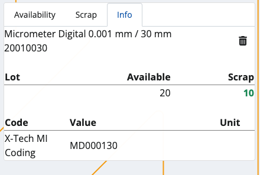
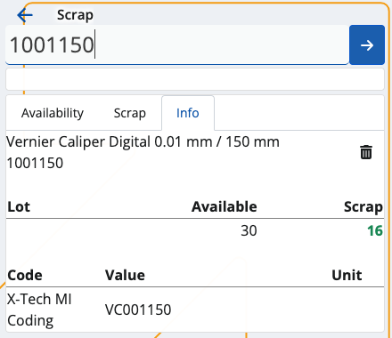

Scrap
This section allows you to deduct available quantities from your warehouse or shop's products, and generate issue store documents.
Scrapping is done when a product's expiry date is reached (respecting the FEFO rule) or the store no longer needs product quantities.
Overview
Scrap is composed of three tabs:
- Availability
- Scrap
- Info
Availability
This is where all of your store products are listed, together with their current quantities and lots, if present.

Scrap
Here, you can find how many quantities of the products are selected for scrap as opposed to being available in total.
For example, out of 30pcs, only 15 may be scrapped. This will be reflected in the issue store document.
Info
If you tap on a product from the Availability tab, you'll be shown further information about it here.
This includes revealing its unique ID, barcode and GTIN, if present, as well as how many instances of it will be scrapped.
If more lots are present, the available-scrap ratio will be distributed based on the FEFO principle.

Scanning
In order to scrap currently available quantities of your products, you need to use the Scan field.
It lets you quickly insert the instances of a product you want to scrap either manually or through barcode commands.
Individual scrap
Simply type in a product's ID once (e.g. "0000001") in order to scrap only one pcs of it. Tap the blue arrow to confirm.

Every time you scan, you'll be taken to the Info tab for the respective product. Successfully scrapped pcs are painted in green.
If more lots are present for a product, the FEFO principle determines which lot has pcs scrapped first.
Multiple scraps
To scrap more pcs or the exact number of pcs for a product, specify it first (e.g. "50*") and then provide the product ID.
This can be done on one line, or on two separate lines for each input. Tap the blue arrow to confirm.
The trash bin button allows you to remove the latest scrap, which will restore the previous Scrap value.
The desired scrapped pcs of a product cannot be more than what is set as available in the system.

Zero count
In case you've made a mistake and want to start the scrap process from scratch, type in "0*" followed by the affected product ID.
If the Scrap bar is left with zero, this will be interpreted as the product having "0 pcs" for scrap in the final store order document.

Generate an issue order document
Once you're done scrapping the desired product quantities, you can go back to the Scrap tab to see if you've made any mistakes.
The Available value will be positioned above the Scrap one, making it easy to these values.
Tap the blue Finish button to generate your issue order document.
This will take you to a separate space with direct access to the document template for this operation.

By tapping on it, you'll access the Inventory module from where you can release and complete the document.